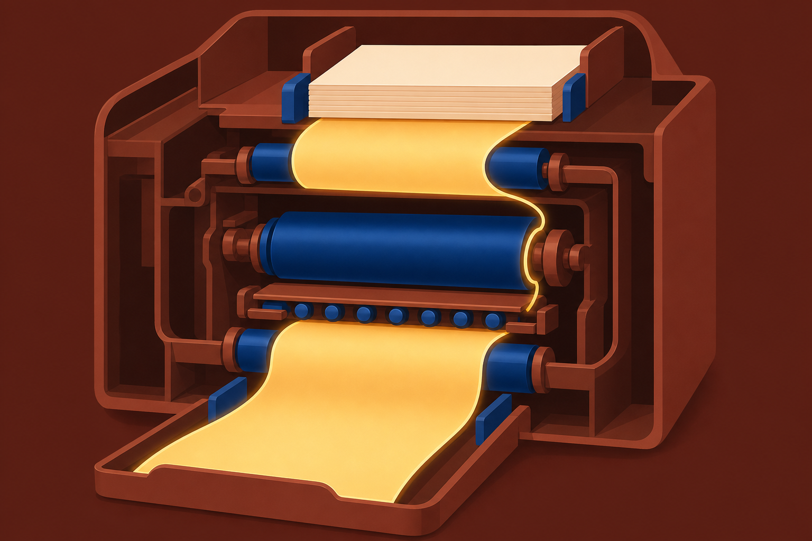
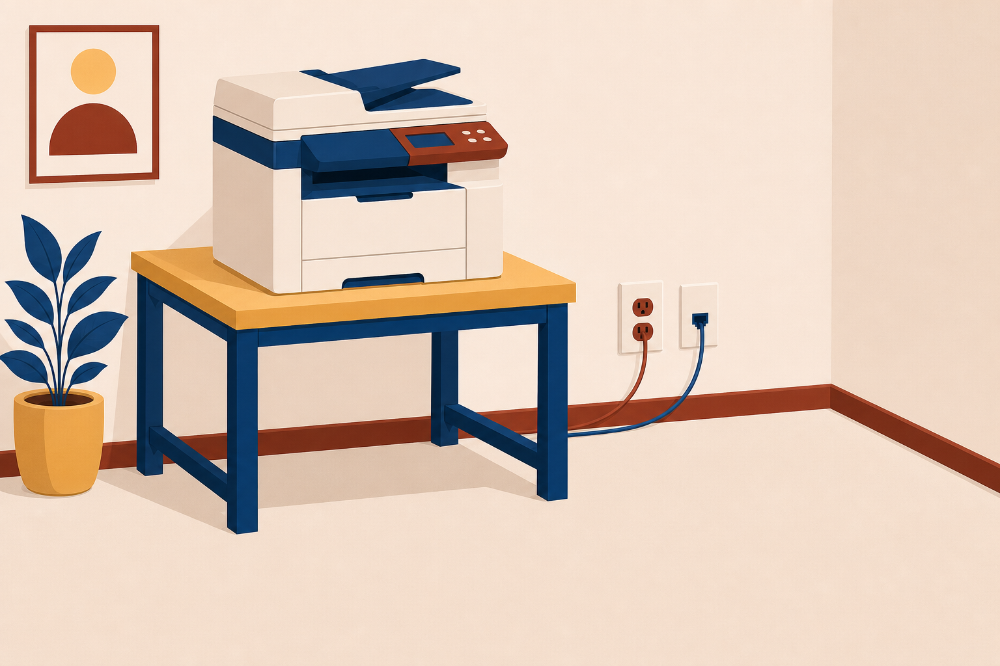
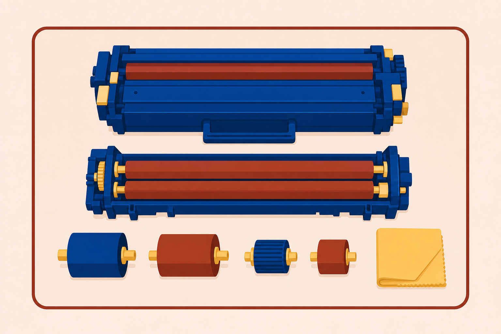
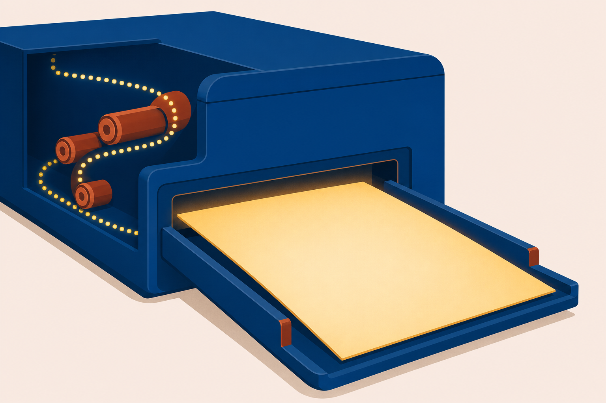

01
Deploy
printers and multifunction devices: connect, configure, share, and secure them.

Printers, MFDs, and the seven-step laser process: follow one job from the click to the output tray.
Start here: You hit Print and nothing comes out. How many places could the job be stuck?
printers and multifunction devices: connect, configure, share, and secure them.
the consumables: toner, ink, rollers, and the fuser that wears out on schedule.
print symptoms and name the failed station before you open a panel.
One client proof rides the whole chapter. Watch what has to go right at every station it passes.
When it stalls, we troubleshoot it.
The app hands off the document.
#218 starts hereTranslates it for the printer.
The spooler holds jobs in line.
USB, Ethernet, or wireless.
Rollers and toner do the work.
The page lands, finished.
Every support ticket in this chapter is one of these stations failing.

Stable power only: an interrupted reflash can leave the device dead. Never reflash on a questionable outlet.
A direct cable to one computer.
Joins the network with its own IP address.
Wi-Fi to the network, or Bluetooth to a computer.
Verify the lane: Settings for USB, the control panel or a browser for network lanes.
What the app hands off.
Renders it in a PDL: XPS, PCL, or PostScript.
Scalable fonts, vector graphics, color.
#218: PostScriptOne device can speak more than one PDL. Match the driver to the language you want.
The machine
Each job
One shared queue for the whole network.
#218 waits hereWith a partner: Client work is confidential and the MFD sits where anyone can grab pages. Name the feature that holds the job, and the feature that proves who printed what.
A moving head crosses the page under the glass. Books and singles.
A fixed head reads the stack fed past it. Batches.
The job becomes a bitmap.
#218 entersThe charge roller lays a negative charge on the drum.
The laser erases the charge where the image goes.
Toner sticks to the neutralized areas.
Four steps in, the page exists only as charged toner on a drum.
The pickup roller grabs the sheet.
Toner moves from drum to paper.
Heat bonds toner into the sheet.
The drum sheds leftover toner.
#218 lands herePickup, feed, and separation rollers carry the sheet through the whole run.
With a partner: Which of the seven imaging steps failed, and which part do you replace?

Heat forms a bubble that bursts and sprays ink.
A jet nozzle sprays the ink.
Holds the head, and often the cartridges, moving across the page.
The page leaves wet. Let it dry before fingers or stackers touch it.
Heat writes on wax-coated paper. Receipts, shipping labels, barcode labels.
Care: replace the special paper, clean the heating element, clear the dust that tearing leaves.
Pins hammer a dot matrix through a ribbon. Multipart paper copies in one pass: white, yellow, pink.
Care: replace the ribbon, the printhead, and the tractor-fed paper.
Warehouses, service counters, and auto shops keep both alive.
The control panel names the jam’s location. Read it before opening doors at random.
Test pages verify every fix. A clean test page points the blame at the application.
With a partner: What restores printing without touching the printer hardware?
List the seven laser imaging steps in order.
A page smears under your thumb. Which stage failed, and which part do you replace?
The print queue freezes. Which service do you restart?

Next step: Run the CertMaster lab: Resolve Print Services Support Tickets, then the module quiz.